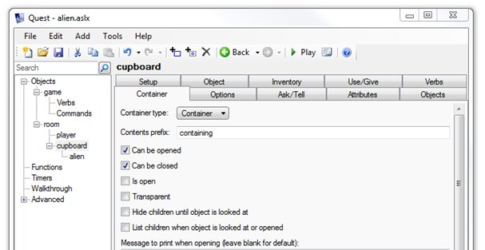
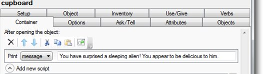
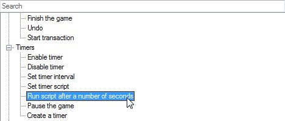
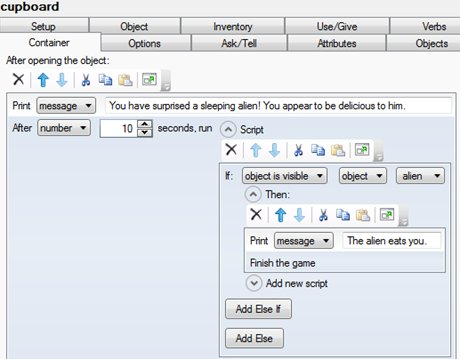
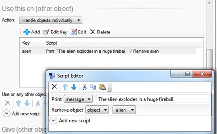

Adding Baddies who want to Kill or Eat you!
What happens if you go into a room or open an object and there is a baddy who wants to kill you?
-
I am going to add in a cupboard in a room where an alien is hiding!
-
I add the cupboard and alien objects.
-
Because the alien is inside the cupboard I need to make the cupboard a container.
-
I go to the Container tab. Choose “Container” from the type list, and untick the “Is open” box so that the cupboard is closed when the game begins.

-
I now want to run a script when the player opens the object.
-
We will tell the player they’ve surprised the sleeping (and hungry) alien, give them 10 seconds to get rid of the alien before it kills them.
-
To do this, scroll down to “After opening the object”, and add a “Print a message” script.

-
Next I add another script – from the Timers section, choose “Run a script after a number of seconds”.

-
I can choose how many seconds to wait before something else happens. In this case, 10 seconds.
-
After 10 seconds, we want to see if the “alien” object is still visible. If so, print a message and kill the player. If not, we don’t need to do anything.
-
So, what we need to do is add an “If” inside the “After 10 seconds” script, as shown below:

-
If the alien is still visible (it has not been killed) then there is a message that says it eats us.
-
Finally we add in a Finish the game command to end the game!
-
Now we need to find a way to kill the alien
-
Let’s add a flame thrower object so that when the player uses the flame thrower on the alien, the alien bursts into flames (and disappears)
-
We add an object called “flame thrower” in the room.
-
We then go to the “*Use/Give*” tab scroll down to “Use this on (other object)”.
-
We choose Select “Handle objects individually”, add “alien”, and then edit the script.
-
We choose Add a “print a message” command to say something to the player eg “The alien explodes in a large fireball”
-
We then add a “Remove object” command to remove the alien from play.
-
Here is what the script looks like this:

-
If we make the alien disappear then nothing will happen after the 10 seconds!
-
So when the player opens the cupboard, if they use the flame thrower on the alien, the alien will no longer be visible in the room. However, if the player has not used the flame thrower, the alien will still be visible, in which case the alien enjoys a tasty meal.
This helpsheet is adapted from one written by Alex Warren from http://www.textadventures.co.uk/blog/2012/02/27/time-limited-puzzles/